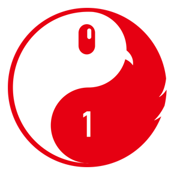
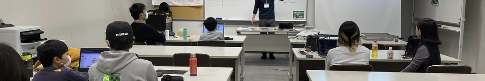

持ち物
ノートパソコン、電源アダプタ、作りたいもののアイデア。貸出や会場条件は各回の案内を確認してください。

CoderDojo 赤羽
About
CoderDojo は、子どものための国際的なプログラミングコミュニティです。 赤羽では北区周辺の子どもたちが集まり、作品を作りながら学ぶ場を開いています。
正解を教わる教室ではなく、作りたいものに向かって試し、調べ、相談し、また試す場所です。 はじめての子も、作りかけの作品がある子も歓迎します。
Program
持ってきたパソコンを開き、作りたいものや今日やることを決めます。
ゲーム、AI、ロブロックス、アニメーションなど、作りたいものに合わせて制作します。
できたこと、試したこと、次にやりたいことをみんなで共有します。
Works
子どもたちの Scratch 作品や、メンターが AI を使って作ったサンプルゲームを紹介します。
Join
参加募集は connpass で行っています。開催回ごとに、日時、会場、持ち物、参加枠を確認して申し込んでください。
ノートパソコン、電源アダプタ、作りたいもののアイデア。貸出や会場条件は各回の案内を確認してください。
初参加の場合は、会場までの付き添いと緊急連絡が取れる状態での参加をお願いします。
プログラミング経験、デザイン、工作、子どもの学びを支える活動に関心がある方の参加も歓迎します。
History
開催回ごとの connpass ページと、作成済みのレポートへのリンクをまとめます。
Updates
サイトの更新内容や、作品・レポートの追加をお知らせします。
Contact
開催情報や参加申込は connpass から。お気軽に X や Facebook でもご連絡ください。